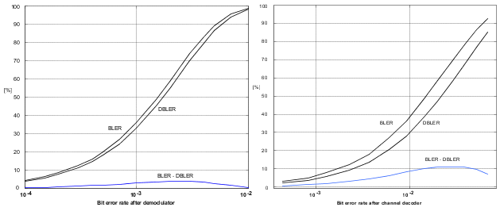

The data block error rate (DBLER) considers only data fields. The possibility of an error in the header is not considered. In contrast, the block error ratio (BLER) considers errors both in data fields and in the header.
DBLER is near BLER results if the probability for an error in the data fields is much higher than the probability for an error in the header. Note that the probability for an error in the data fields depends on the used coding scheme.
The difference between the BLER defined in 3GPP TS 51.010 and the DBLER varies from one coding scheme to another. For coding scheme CS-4, no additional effects due to channel coding occur. Thus, the DBLER-BLER difference is determined by the difference of the data field size compared to the complete RLC block size.
- The different channel coding of the header and data fields
- Differences in the bit error rate of header and data bits after the channel decoder
The figure below shows a comparison for the coding schemes CS-4 and CS-1.
